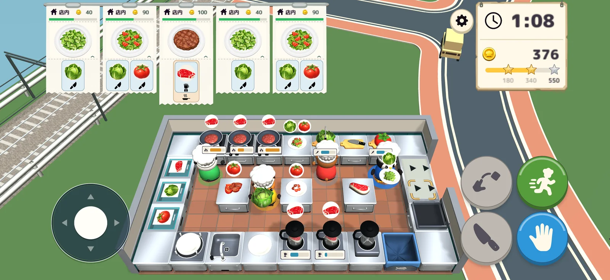
友達と協力クッキング！
1〜4人で、切って焼いて届けよう
部屋の番号を伝えるだけで、友達と同じ厨房へ。決まった合図のボタンで、ことばを使わずに助け合えます。
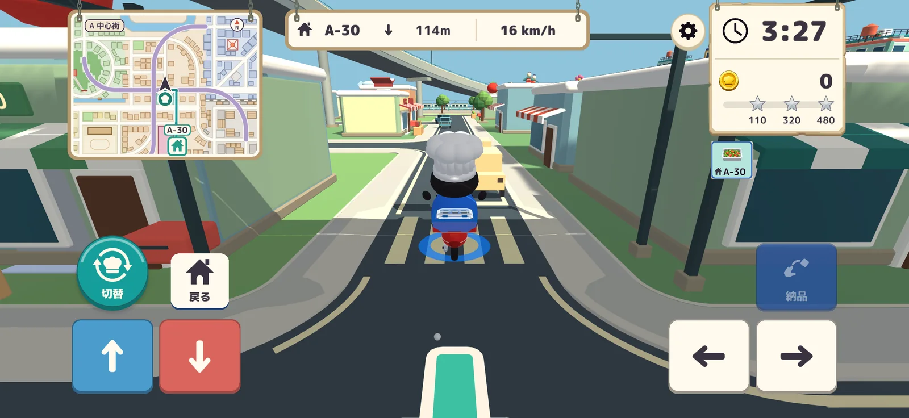
できたら、バイクで街へ！
自分で届けても、配達代行にまかせても
できた料理は、お店の提供口で渡すか、バイクで街の家までお届け。どちらにするかは、あなた次第です。
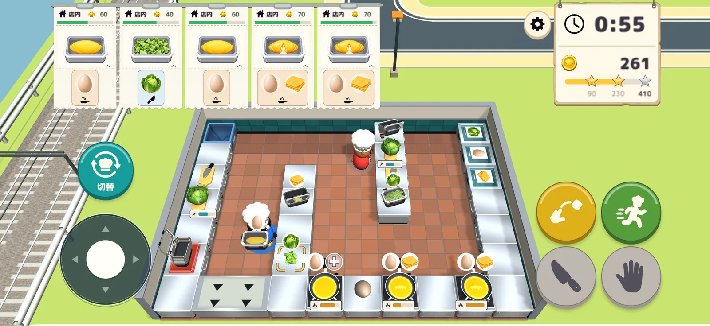
ひとりでも、とことん遊べる！
2人の料理人を切り替えて回す
ひとりの時は、2人の料理人を切り替えながら厨房を回します。自分のペースで、じっくり遊べます。
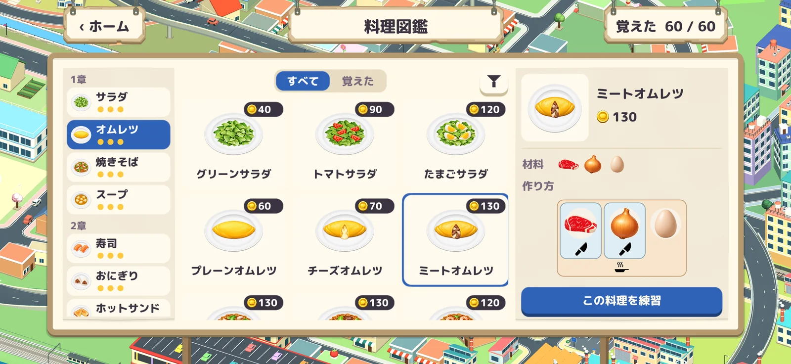
つくれる料理が、たくさん！
和食も洋食も、いろいろ作れる
サラダ、オムレツ、焼きそば、お寿司……。切る、焼く、煮る、盛りつけるを組み合わせて、いろいろな料理を作れます。
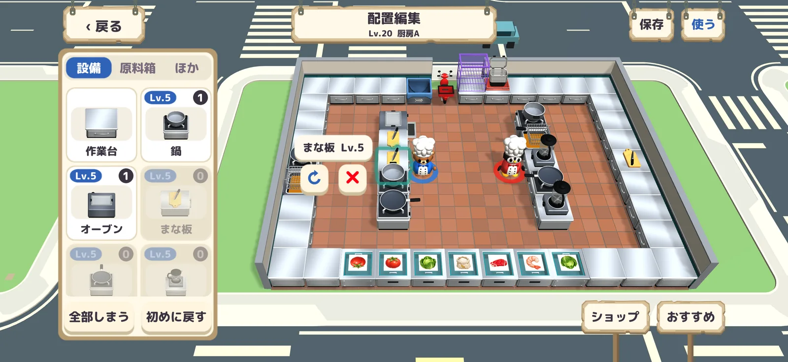
自分だけの厨房を作ろう！
設備をそろえて、好きに並べる
本店の厨房に、設備を好きに並べて営業。売り上げで設備をそろえて、店のランクを上げていきます。よくできた配置は、リンクで友達に見せられます。
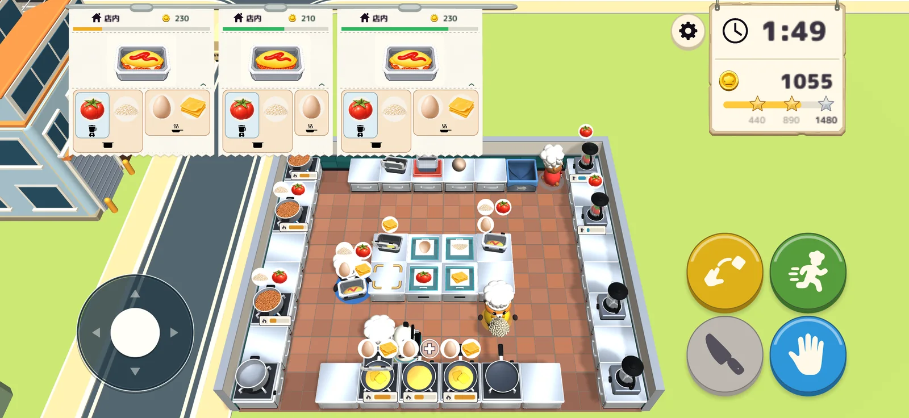
出張先は、毎回ちがう厨房！
ステージごとに、形も仕掛けもちがう
出張営業では、ステージごとに厨房の形も仕掛けも変わります。ひとりでも、オンラインの協力でも遊べます。
どうぶつシェフが、いっぱい！
お気に入りを見つけて、着がえも楽しもう
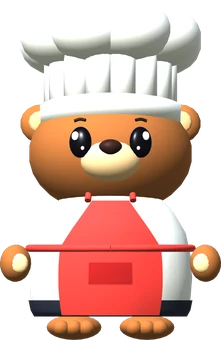
クマ- カピバラ
- ネコ
- イヌ
- キツネ
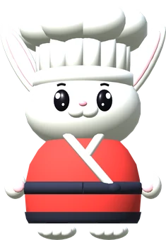
ウサギ- パンダ
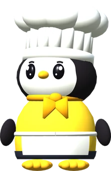
ペンギン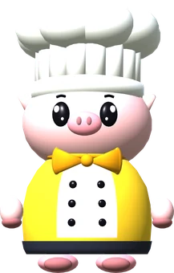
ブタ- カエル
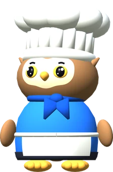
フクロウ- アライグマ
- タコ
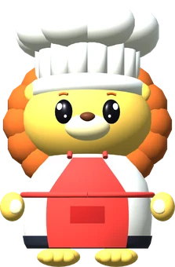
ライオン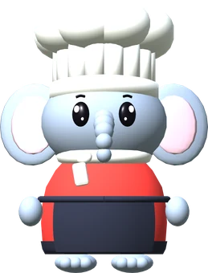
ゾウ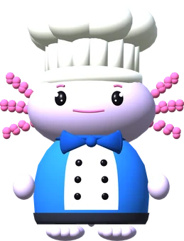
ウーパールーパー- ハリネズミ
- ワニ
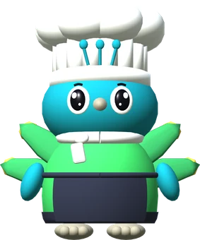
クジャク- ミツバチ
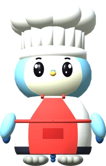
インコ- リス
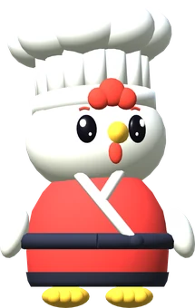
ニワトリ- フラミンゴ
24体の動物の料理人が登場。ゲームの中のコインで、仲間を増やせます。
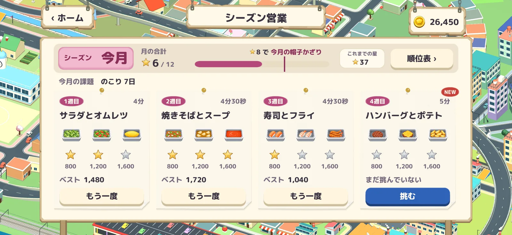
毎月、新しい4つの課題！
シーズンで腕だめし
月ごとの課題に、自分の店の設備と配置で挑戦。週ごとに新しい課題が開きます。
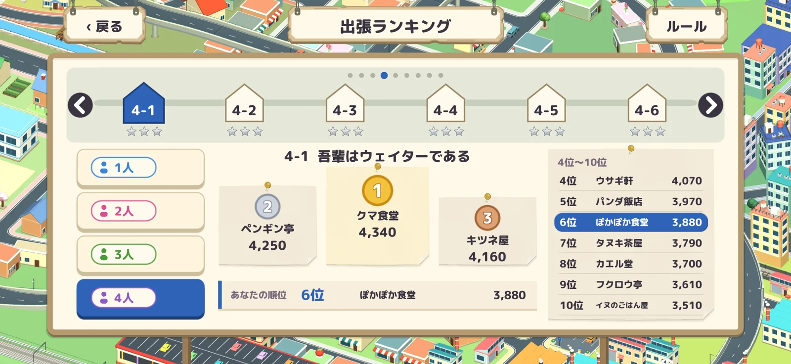
ランキングで、みんなと競おう！
1人でも、友達とでも。人数ごとの順位
出張営業の記録は、人数ごとのランキングに。全国のプレイヤーと腕くらべができます。